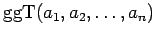
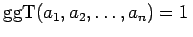
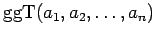
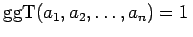
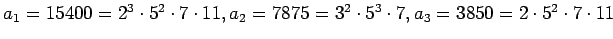

Inhalt Index DeskTop Bronstein

 Algebra und Diskrete Mathematik Elementare Zahlentheorie Teilbarkeit
Algebra und Diskrete Mathematik Elementare Zahlentheorie Teilbarkeit


Für ganze Zahlen die nicht alle gleich 0 sind, wird die größte Zahl in der Menge der gemeinsamen Teiler von  der größte gemeinsame Teiler von
der größte gemeinsame Teiler von  genannt und mit  bezeichnet. Gilt , dann heißen die Zahlen
genannt und mit  bezeichnet. Gilt , dann heißen die Zahlen  teilerfremd.
teilerfremd.
Für die Bestimmung des größten gemeinsamen Teilers reicht es aus, die positiven gemeinsamen Teiler zu betrachten. Sind die kanonischen Primfaktorenzerlegungen
von  gegeben, dann gilt
gegeben, dann gilt
| (5.253b) |
| Beispiel |
|
Für die Zahlen  ist der . |
| (5.254b) |
dann kann man durch wiederholte Anwendung des EUKLIDischen Algorithmus auch für n natürliche Zahlen mit n > 2 den größten gemeinsamen Teiler ermitteln.
(S. auch Satz zum EUKLIDischen Algorithmus.)
| Beispiel A |
|
Es gilt , denn . |
| Beispiel B |
|
|
| Beispiel |
|
Der EUKLIDische Algorithmus (s. Formulierung 1 und Formulierung 2) zur Berechnung des
|
Satz zum Euklidischen Algorithmus Für natürliche Zahlen a,b mit a > b > 0 sei die Anzahl der Divisionen mit Rest im EUKLIDischen Algorithmus und die Stellenzahl von b im dekadischen System. Dann gilt:
| (5.255) |
| (5.256b) |
Man kann auch als Linearkombination von  darstellen, denn:
darstellen, denn:
| (5.256c) |
| Beispiel |
|
|